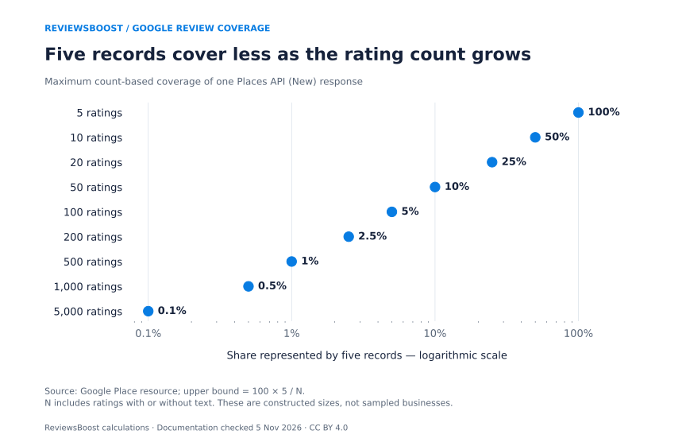
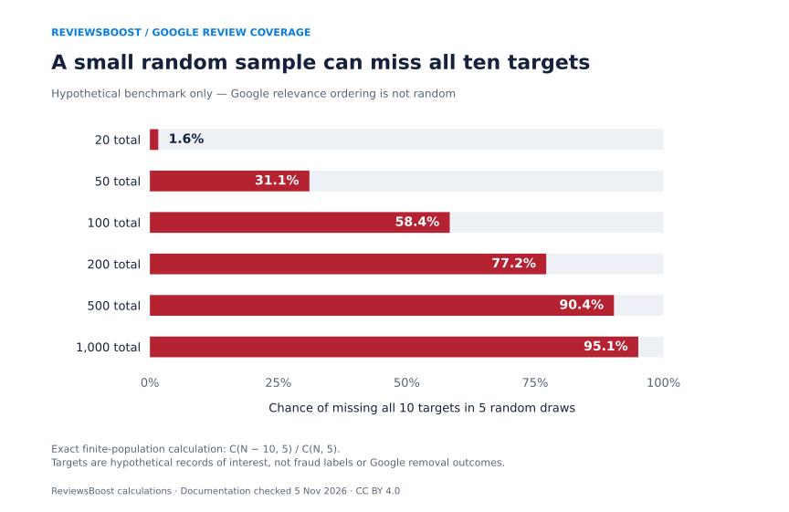
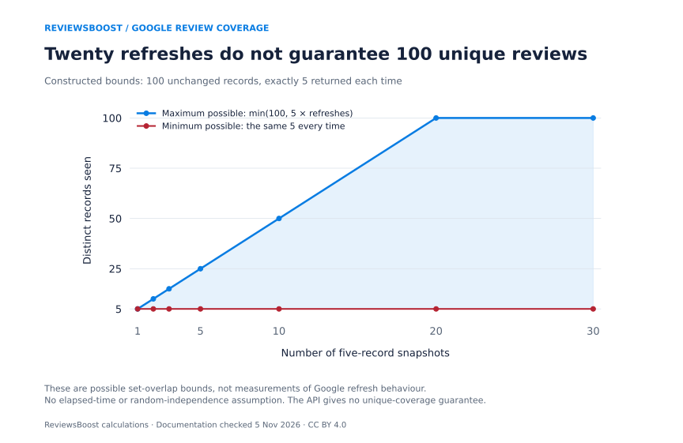

Why does a Google review widget show only five reviews?
A widget built from one Google Places API (New) response can receive at most five review records. The same response can include an aggregate rating and a much larger rating count. A panel showing five comments beside hundreds of ratings can therefore be working as designed. It is not a complete review inventory. Google’s Place resource documentation.
This matters when a business uses its website widget to check for a harmful review, verify a reported removal or decide whether every new review has been answered. Those tasks require knowing which records were inspected and which were outside the response.
- Five records represent at most 0.5% of a 1,000-rating count. This is count arithmetic, not a sample of Canadian businesses.
- A random five-record sample would miss all ten targets in a 200-record population 77.2% of the time. This is a hypothetical benchmark. Google documents relevance ordering, so it is not Google’s measured detection rate.
- Twenty five-record refreshes can still show the same five records. One hundred unique records is a possible upper bound, not a coverage guarantee.
What we published: a new, reproducible compilation of 12 documentation facts and 189 constructed calculation rows, with three original charts. We collected no customer review histories and measured no removal outcomes. Methods and limits · Download the release.
Two Google interfaces, two different jobs
Google describes the Places review array as “A maximum of 5 reviews can be returned.” Its documented ordering is relevance. The authorised Business Profile review-list method offers pagination and a maximum requested page size of 50. That is a per-page limit, rather than a 50-review ceiling for a location. Places reference · Business Profile review-list reference.
| Question | Places API (New) | Business Profile reviews.list |
|---|---|---|
| How many records in one response? | Up to 5 | Requested page size up to 50 |
| Is review pagination documented here? | No review continuation field in the Place resource | Yes, through nextPageToken |
| What is the default selection/order? | Relevance | Latest modification first |
| Is a broader aggregate available? | rating and userRatingCount | averageRating and totalReviewCount |
| Who can use the route? | A configured Places application under its access terms | Appropriately authorised access to a verified location |
Ask your widget or monitoring provider which route it uses. Some products have authorised access or their own permitted integrations, so the five-record cap must not be applied to every product calling itself a Google review widget. A longer carousel also does not reveal its data source.
Original dataset: how much can five records cover?
For an aggregate count N, the most a five-record response can represent by count is 100 × min(5,N) / N percent. This assumes all five slots are populated. A shorter response represents less.
There is an important denominator detail: Google’s aggregate count includes ratings without written comments. A share of that count is not the same thing as the share of all written reviews retrieved. We cannot turn an API field definition into a count of missing comments. Definition of userRatingCount.



| Aggregate count N | Records shown | Maximum count coverage | Not in this response, at least | Pages at 50* |
|---|---|---|---|---|
| 5 | 5 | 100% | 0 | 1 |
| 10 | 5 | 50% | 5 | 1 |
| 20 | 5 | 25% | 15 | 1 |
| 50 | 5 | 10% | 45 | 1 |
| 100 | 5 | 5% | 95 | 2 |
| 200 | 5 | 2.5% | 195 | 4 |
| 500 | 5 | 1% | 495 | 10 |
| 1,000 | 5 | 0.5% | 995 | 20 |
| 5,000 | 5 | 0.1% | 4,995 | 100 |
*Pages are ceil(N/50) under a stable, accessible collection with full pages. Follow the actual continuation tokens; count changes, shorter responses and access restrictions can change the work needed.
The change from 100 to 1,000 ratings leaves the five-record cap unchanged while reducing this coverage ceiling from 5% to 0.5%. The additional history belongs to the profile, not automatically to the widget’s evidence set. Keep the aggregate rating supplied by Google separate from any average calculated from displayed excerpts.
A benchmark for what five records can miss
We constructed 159 finite-population scenarios using nine population sizes, up to seven target counts and sample sizes of one, three and five. A target means a record someone wants to find. It does not mean a one-star, fake or policy-violating review.
In a hypothetical uniform sample without replacement, the probability of finding none of K targets in S draws from N records is C(N−K,S) / C(N,S). The probability of finding at least one is its complement. This is the hypergeometric model described in the R statistics reference.



| Total records N | Targets K | Chance of missing all targets |
|---|---|---|
| 20 | 10 | 1.63% |
| 50 | 10 | 31.06% |
| 100 | 10 | 58.38% |
| 200 | 10 | 77.17% |
| 500 | 10 | 90.35% |
| 1,000 | 10 | 95.09% |
At N=200, K=10 and S=5, the exact calculation gives a 77.17% miss probability. It does not say a real Google widget misses harmful reviews 77.17% of the time. A relevance-based selector could include or omit particular targets systematically. Without observing that selector, these model values cannot be calibrated into actual detection rates.
There is an even simpler result when only one record matters: its inclusion probability in this random benchmark is S/N. Five random records from 500 would have a 1% inclusion probability for that one target. Again, that is a reference calculation rather than a prediction for Google.
Does refreshing the widget solve the coverage problem?
Refreshing a five-record response twenty times creates twenty responses. It does not establish that their records are different. Under our explicit assumption that every response contains five records from one unchanged population, the distinct-record count can range from 5 to min(N,5T), where T is the number of snapshots.



| Snapshots | Minimum unique | Maximum unique |
|---|---|---|
| 1 | 5 | 5 |
| 2 | 5 | 10 |
| 3 | 5 | 15 |
| 5 | 5 | 25 |
| 10 | 5 | 50 |
| 20 | 5 | 100 |
| 30 | 5 | 100 |
The release includes 21 such envelopes for populations of 20, 100 and 1,000. They say nothing about how often Google changes its selected records. In particular, multiplying the number of refreshes by five counts returned slots, not necessarily new observations. The assumptions are incompatible with interpreting the shaded region as a measured service level.
Review creation and review selection are separate problems
Selection begins before a widget is involved. Schoenmueller, Netzer and Stahl’s 2020 study examined more than 280 million reviews across 25 platforms and investigated why people with extreme evaluations are more likely to contribute reviews. Their cross-platform findings concern who writes a review; they do not estimate a five-record Google widget’s performance. The Polarity of Online Reviews, Journal of Marketing Research.
Our audit concerns a later selection step: which existing records a particular response exposes. The two mechanisms should not be folded into one bias estimate. The paper’s dataset is cited as research context; we did not obtain or reanalyse its individual records, and its review count is not part of our 189-row calculation dataset.
This also explains why an average of the five visible star ratings is a weak substitute for a profile’s aggregate. It combines a selected excerpt set with a different denominator. Show the authoritative aggregate when available and describe the excerpts as excerpts.
A monitoring workflow for Canadian businesses
The practical issue is the same for a Toronto salon, a Mississauga repair shop or a Vancouver café: first establish what the monitoring view actually covers. These examples are illustrative. We have not estimated city-specific missing-review rates.
- Identify the source. Record whether a panel uses one Places response, authorised Business Profile access, a native management screen or another permitted source. Ask how it handles pagination and records without comments.
- Separate aggregate counts from inspected records. A profile count of 500 and a retrieved set of five are two different measurements. Keep the source and retrieval time beside each.
- Check the review itself. A record absent from a widget may still exist in Google’s interface. Review processing, profile changes and policy action are among the explanations Google gives for actual visibility issues. Google’s missing-review guidance.
- Track modifications as well as new posts. The Business Profile Review resource distinguishes creation from latest modification. A process looking only at creation time can overlook a changed older record. Its last-modified field still does not explain why an edit occurred. Review timestamp definitions.
- Check the implementation’s permissions and data rules. API access does not authorise unrestricted copying of review text or indefinite retention. Plan the monitoring process around the applicable access, storage and attribution requirements. Places API policies.
When a particular review may violate policy, preserve the public link and a factual account of the issue through an appropriate process. A widget gap does not prove that a report worked. Our review evidence checker helps organise a concern, while the removal timing study explains why stages and outcomes need different labels.
ReviewsBoost assists Canadian businesses with review assessment, reporting and reputation monitoring. Start with a free assessment request or read about our monitoring approach. We explain the scope before paid work; Google decides removal and no result is guaranteed.
Methods, provenance and limits
Study type: a documentation audit and constructed reference dataset, version 1.0.0. Source definitions were checked on November 5, 2026. The twelve source-fact rows preserve the endpoint, field, interpretation and attribution. The public source manifest records seven retrieved source fingerprints and access dates.
The nine coverage rows use rating counts of 5, 10, 20, 50, 100, 200, 500, 1,000 and 5,000. The sampling grid uses target counts of 1, 2, 5, 10, 20, 50 and 100 where they fit the population, crossed with sample sizes 1, 3 and 5. That produces 159 valid scenarios. The refresh grid uses three population sizes and seven snapshot counts, giving 21 envelopes. Together these are 189 constructed calculations, not 189 businesses or additional observations.
The builder uses exact integer combinations and reduced fractions before decimal formatting. The independent audit instead multiplies successive conditional miss fractions and enumerates all subsets for small populations. It checks every arithmetic row, the CSV/JSON/CSVW correspondence, documentation constants and locally captured source fingerprints. Exact fraction components are strings in JSON to preserve large integers for JavaScript consumers. Charts are rendered from the release file.
The API facts are version-specific. Actual responses can be shorter, rating counts can change, and an authorised collection can change while it is being paginated. We neither queried Google for individual businesses nor scraped review text. The random model assumes a selection process that the documented Places endpoint does not claim to use. The refresh envelopes assume an unchanged population and exactly five returned records each time. Neither model estimates an empirical Google probability.
Commercial interest: ReviewsBoost sells review-related assistance. This publication reports no customer results, proprietary fraud detector, ranking experiment or independent peer review. Our contribution is the new documented compilation, calculations and original charts. Requests for corrections can be made through our editorial policy.
Questions about missing reviews and widgets
Does a missing widget review mean Google removed it?
No. First check the actual review and the relevant business-management view. A selected response omits many records by design, so omission is not a removal confirmation.
Can every Google review widget show all reviews?
The answer depends on the product’s permitted data source and access. One Places API (New) response has a five-record maximum. That does not describe every authorised integration or Google’s own interfaces.
Can I infer Google’s real miss rate from your probability chart?
No. Its numbers assume uniform random sampling without replacement. Google documents relevance ordering. Our chart is a transparent mathematical benchmark, not an observed widget-performance study.
Does requesting 50 Business Profile records mean I have every review?
No. Fifty is the maximum requested page size. Where a continuation token is returned, more pages remain. The operation also requires the right authorisation and a verified location.
Will more frequent refreshes guarantee a complete history?
No completeness guarantee follows from a response cap. Count distinct review identifiers through a permitted process rather than treating returned slots as new records. Our chart shows how repeated overlap can leave coverage unchanged.
Download the data, reproduce the figures and cite the work
- 12 attributed documentation facts · CSVW field definitions.
- Nine constructed coverage bounds · CSVW field definitions.
- 159 hypothetical random-sample scenarios · CSVW field definitions.
- 21 constructed refresh envelopes · CSVW field definitions.
- Complete release with source provenance and assumptions.
- Source manifest, field audit and SHA-256 fingerprints.
- Data builder · Independent arithmetic audit · Chart script · Article builder.
- BibTeX citation · Citation File Format.
Rebuild with python build-google-review-coverage-data.py, then python audit-google-review-coverage.py. Plotting uses python plot-google-review-coverage.py and Matplotlib. The optional --capture flag on the data builder refreshes private source captures and public fingerprints; it does not collect user reviews.
Our original compilation, calculations and chart artwork are released under CC BY 4.0. Source publishers retain rights in their documentation and article. Cite Google for the API limits and ReviewsBoost for this compilation and derived calculations; label the probability examples as hypothetical.
ReviewsBoost Editorial Team. (2026, November 5). Google review widget coverage: documentation audit and constructed reference calculations (Version 1.0.0). Article and open dataset.
Primary sources and research context
- Google Maps Platform, Place resource (Places API New). Review cap, ordering, rating and aggregate-count definitions.
- Google Business Profile API, reviews.list. Page limits, continuation, sort order, verified-location requirement and authorisation.
- Google Business Profile API, Review resource. Identifiers, creation and modification fields.
- Google Business Profile Help, About missing or delayed reviews. Visibility explanations; not a dataset of removal probabilities.
- Google Maps Platform, Places API policies and attributions. Data-use conditions for implementations.
- R Core Team, stats documentation: Hypergeometric distribution. Reference model for sampling without replacement.
- Schoenmueller, V., Netzer, O., and Stahl, F. (2020), The Polarity of Online Reviews: Prevalence, Drivers and Implications. Journal of Marketing Research, 57(5), 853–877. DOI: 10.1177/0022243720941832. Background research only; its underlying review records were not reanalysed here.